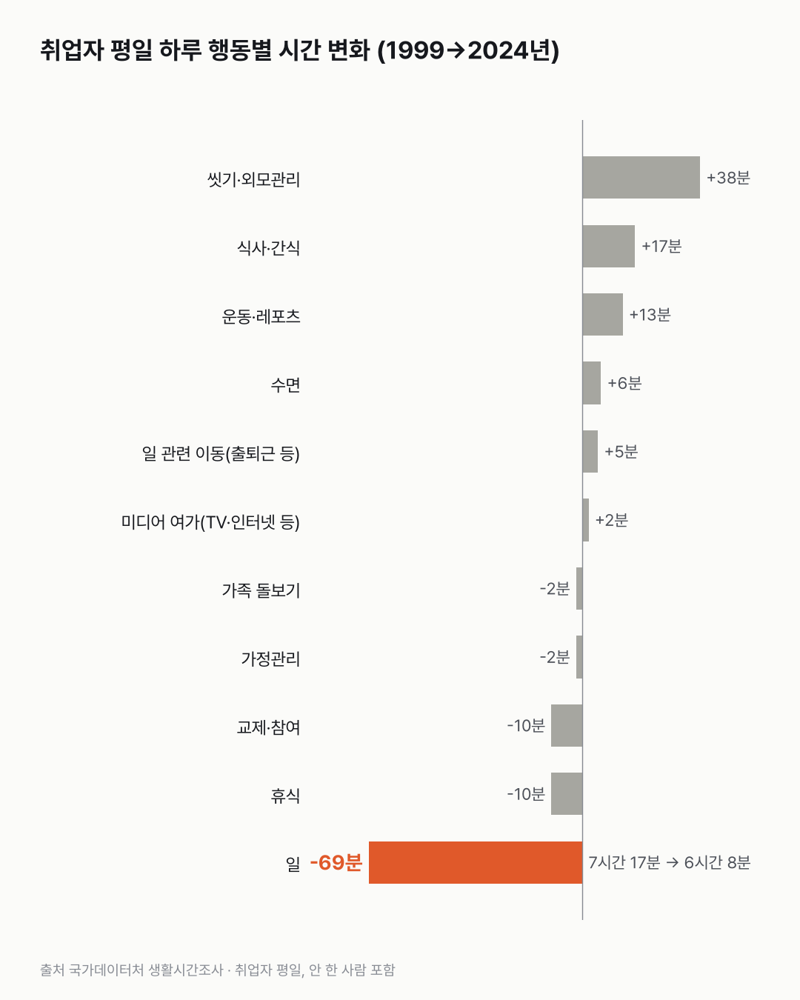
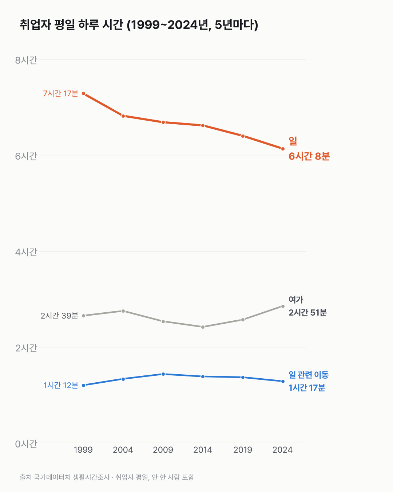

일하는 시간은 줄었는데, 출퇴근 시간은 그대로예요
일하는 시간은 줄었는데, 오가는 시간은 줄지 않았어요.

3줄 요약
- 일하는 사람의 평일 근무시간은 1999년 7시간 17분에서 2024년 6시간 8분으로 69분 줄었어요.
- 출퇴근처럼 일 때문에 오가는 시간은 1시간 12분에서 1시간 17분으로 거의 그대로예요.
- 씻기·외모관리(+38분), 식사·간식(+17분), 운동(+13분)은 늘었어요. 일하지 않는 사람도 비슷하게 늘었어요.
아침에 집을 나서 회사 문을 열기까지, 저녁에 다시 현관에 닿기까지. 이 길에 쓰는 시간은 25년 동안 거의 줄지 않았어요. 가장 길었던 건 2009년 1시간 26분이었어요. 출근과 퇴근을 따로 적은 2019·2024년엔 출근 33분, 퇴근 32~33분이에요.
그사이 일하는 시간은 줄었어요. 1999년 7시간 17분에서 2024년 6시간 8분까지, 다섯 번의 조사 모두 직전보다 줄었어요. 69분이에요.
늘어난 쪽은 씻기·외모관리(+38분), 식사·간식(+17분), 운동·레포츠(+13분)예요. 수면은 +6분으로 거의 같아요. 일 말고 줄어든 건 교제·참여(−10분)와 아무것도 안 하고 쉬기(−10분)예요.
여기서 일하지 않는 사람 표를 옆에 놓았어요. 같은 기간 비취업자도 씻기·외모관리 +36분, 식사·간식 +18분, 운동·레포츠 +20분이었어요. 이 세 가지는 일하는 사람과 안 하는 사람이 같이 늘었어요.
최근 5년(2019→2024)만 보면 일은 16분 줄고 여가는 17분 늘었어요. 늘어난 여가는 대부분 TV·인터넷 같은 미디어 여가(+15분)예요. 비취업자도 미디어 여가가 21분 늘었어요.


사는 곳과 일하는 곳 사이 거리가 그동안 어떻게 바뀌었는지가 다음 궁금증이에요.
이 숫자는 어디서 왔나요
출처
기준일 1999·2004·2009·2014·2019·2024년 조사, 평일(월~금)이에요.
국가데이터처생활시간조사
- 성인의 취업여부별 평균시간KOSIS DT_1TS202019원본 보기
취업자·비취업자의 평일 하루 행동별 평균시간, 1999·2004·2009·2014·2019·2024년
어떻게 셌나요
- 생활시간조사는 5년마다 응답자가 하루를 10분 단위 일지로 적는 조사예요.
- 평균시간은 그날 그 행동을 하지 않은 사람(0분)까지 넣은 평균이에요. 그래서 휴가 등으로 그날 일하지 않은 취업자도 "일 0분"으로 들어가요.
- 1999~2019년 값은 2019년 행동분류 기준으로 다시 집계한 값이에요(표 주석). 예전에 공표된 숫자와 다를 수 있어요.
- 일하는 사람(취업자)과 일하지 않는 사람(비취업자)을 나란히 놓았어요.
한계 6가지
이 데이터로 말할 수 없는 것
- 같은 사람을 따라간 것이 아니에요. 25년 사이 취업자의 나이, 업종, 시간제 비중이 바뀌었어요. "한 사람의 하루가 이렇게 바뀌었다"는 뜻은 아니고, "그해 취업자 평균이 이랬다"예요.
- 5년에 한 번, 하루 일지예요. 해마다의 변화나 계절 차이는 알 수 없어요. 조사 시기의 하루가 평소와 다를 수 있어요.
- 2019→2024년 사이에는 코로나 시기가 있어요. 최근 5년 변화가 그 영향인지는 이 데이터로 가를 수 없어요.
- '일' 시간은 그날 일하지 않은 취업자(휴가 등)까지 넣은 평균이에요. 실제로 일한 날의 근무시간과는 달라요. 근로시간 통계(사업체 조사)와 바로 비교하면 안 돼요.
- '성인'의 정확한 연령 범위는 확인하지 못했어요. 표 이름만 근거로 썼어요. 통계설명자료에서 확인이 필요해요.
- 원인은 말하지 않아요. 주 52시간제, 주 5일제, 재택근무, 스마트폰 등 이유는 이 데이터로 알 수 없어요.
새 글 나오면 받아 보기
피드 리더 앱에 이 사이트 주소를 한 번 넣어 두면, 새 글이 올라올 때 앱에 떠요. 가입이나 메일 주소는 필요 없어요.
받는 법 보기
- 피드 리더 앱을 하나 골라요. 새 글을 모아 보여 주는 앱이에요. 예를 들면 Feedly나 Inoreader가 있어요. 둘 다 무료고 웹·휴대폰에서 써요.
- 앱에서 '구독 추가'(+)를 누르고 아래 주소를 붙여 넣어요.
- 끝이에요. 새 글이 올라오면 앱 목록에 떠요.
https://protofu.github.io/opendata-insight/feed.xmlFeedly를 쓴다면 여기를 눌러 바로 추가할 수도 있어요.